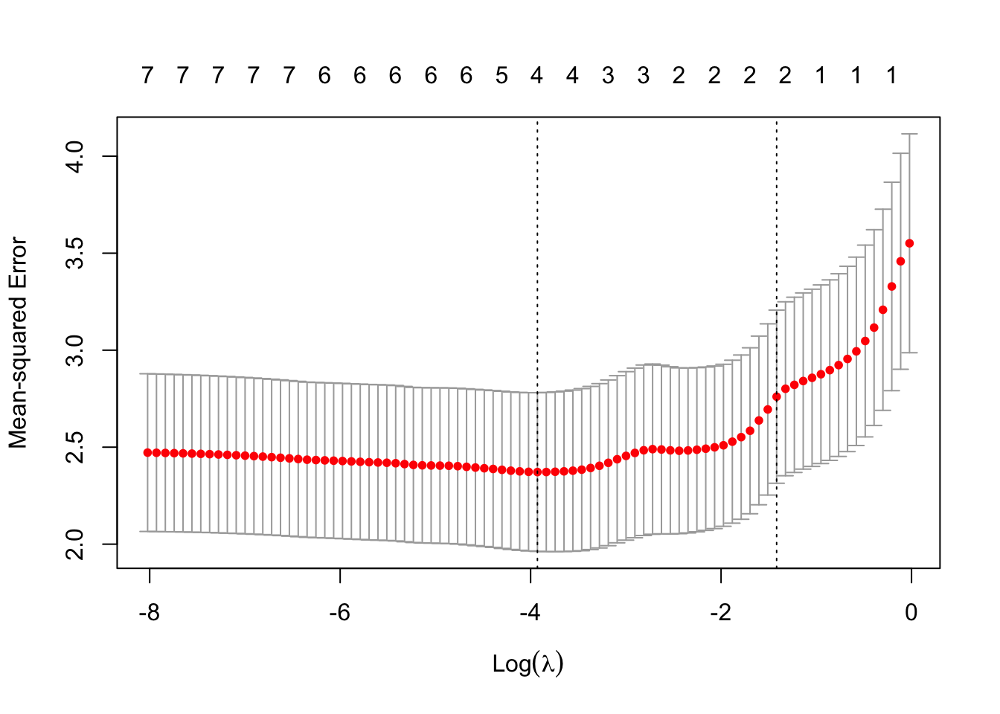

Good predictions can help us develop theories of explanation and vice versa
Explanation vs. Prediction
Statistical Tensions
Statistical models that accurately describe causal truths often have poor prediction and are complex
Predictive models are often very different from the “true”, underlying data generating processes
Explanation vs. Prediction
What do we do in Psychology and Neuroscience?
What about regression?
Point of Yarkoni & Westfall (2017) - How far have we really come in the past 10 years? 20 years? 30 years? …not as far as we’d like
We should spend more time and resources developing predictive models than we currently do
Maybe Helpful Definitions
Machine Learning (ML) is the process of feeding previous observations into a computer and using the computer to generate predictions for new observations. AKA:
machine inference
pattern recognition (Google Photos!)
statistical estimation
prediction modeling
statistical learning (ish)
Maybe Helpful Definitions
Training occurs by extracting patterns from the observed data; think of this as learning
Testing occurs by verifying predictions on previously unobserved data; think of this as evaluating
Artificial Intelligence is not the same as machine learning. AI is the simulation of human intelligence by computers; AI systems are generally trained with machine learning approaches.
Some more definitions
Supervised Learning: using known patterns between input and output observations to train a mapping between the two
Regression! learning the mapping between a continuous input feature variable and a continuous output target variable
Classification: learning the mapping between a continuous input feature variable and a categorical output target variable (i.e., a label)
Some more definitions
Unsupervised Learning: determining patterns in observations without guiding referents
Dimensionality Reduction: decreasing the overall number of features considered in a learning procedure (i.e., PCA, ICA etc.)
Clustering: grouping features together that are similar as determined by some metric
@Wash U
Reinforcement Learning: determining a mapping between input and output observations using only a measure of training quality
ML classes in CS department
Wouter Kool for reinforcement learning
ACCSN with Dennis Barbour and myself for high level discussions on these topics
Poli Sci department for dealing with categorical outcomes
Machine Learning Algorithms
ordinary least squares linear regression
logistic regression
k-means clustering
nearest neighbor
naive Bayes
ridge regression
LASSO regression
support vector machine
random forest
Gaussian process estimator
multilayer perceptron (deep net)
convolutional network
recurrent network
generalized adversarial network
Some terminology
Overfitting is when we mistakenly fit sample-specific noise as if it were actually a signal.
If our model has a \(R^2 = .9\), we do an excellent job of explaining variance in our sample.
OLS models tend to be overfit because they minimize error for a specific sample
Bias and Variance
Bias refers to systematically over- or under-estimating parameters.
Variance refers to how much estimates tend to jump around
Bias-Variance Tradeoff we can reduce variance around our estimates but at the expense of increasing bias of estimates and vice versa
Underfitting means we can’t capture a relationship at all – not as big of a problem for us
You should be afraid…very afraid
How do we take what we know from overfitting & the bias-variance tradeoff and incorporate it? What can we learn from the ML world?
Big Data * Reduce the likelihood of overfitting – more data means less error
Cross-validation * Is my model overfit?
Regularization * Constrain the model to be less overfit
“Every pattern that could be observed in a given dataset reflects some…unknown combination of signal and error”
Error is random, so it cannot correlate with anything; as we aggregate many pieces of information together, we reduce error.
Cross-validation
Cross-validation is a family of techniques that involve testing and training a model on different samples of data.
Cross-validation: Hold-out Samples
Split into training and testing sets
Fit your model on the training set
Predict outputs for your testing set
Pros
Straightforward; computationally easy
Cons
Which data go into which set?
What if the vast majority of group A fall into the training set and the vast majority of group B fall into the testing set?
K-fold Cross-validation
Make k subsets of your data
Repeat the hold-out method of test/train, but do it k times
Get the model fit for all k iterations; take the average model fit
Doesn’t matter much which data points fall into test or train since each subset can be both a test and a training set
The more folds you do (larger k), the more you are able to decrease your variance around your averaged model fit
Cons
Can take a decent amount of computational power, depending on the dataset
Leave-One-Out Cross-validation
Same as k-fold, but now k is equal to your \(N\)
Pros
Good estimations
Cons
Even more computationally expensive
Especially if using “big data”
Code
library(here)
here() starts at /Users/jackson/Library/CloudStorage/Box-Box/GLM_3890/2026
Code
stress.data =read.csv(here("stress.csv"))library(psych)describe(stress.data, fast = T)
Warning in FUN(newX[, i], ...): no non-missing arguments to min; returning Inf
Warning in FUN(newX[, i], ...): no non-missing arguments to max; returning -Inf
vars n mean sd median min max range skew kurtosis se
id 1 118 488.65 295.95 462.50 2.00 986.00 984.00 0.10 -1.29 27.24
Anxiety 2 118 7.61 2.49 7.75 0.70 14.64 13.94 -0.18 0.28 0.23
Stress 3 118 5.18 1.88 5.27 0.62 10.32 9.71 0.08 0.22 0.17
Support 4 118 8.73 3.28 8.52 0.02 17.34 17.32 0.18 0.19 0.30
group 5 118 NaN NA NA Inf -Inf -Inf NA NA NA
Code
model.lm =lm(Stress ~ Anxiety*Support*group, data = stress.data)summary(model.lm)$r.squared
[1] 0.4126943
A brief aside:
Newer package called tidymodels is better for machine learning, but requires many more steps. For now, this is the simpler method.
R vs. Python 🐍 . R is excellent for statistics and visualizing data. Most of what we do in Psychology. Python is better for machine learning and is more of a full suite language.
If you’re going hard with ML, use tidymodels or Python.
Example: 10-fold cross validation
Code
library(caret)
Warning: package 'ggplot2' was built under R version 4.4.3
Code
# set control parametersctrl <-trainControl(method="cv", number=10)# use train() instead of lm()cv.model <-train(Stress ~ Anxiety*Support*group, data = stress.data, trControl=ctrl, # what are the control parametersmethod="lm") # what kind of modelcv.model
Linear Regression
118 samples
3 predictor
No pre-processing
Resampling: Cross-Validated (10 fold)
Summary of sample sizes: 106, 106, 106, 106, 106, 106, ...
Resampling results:
RMSE Rsquared MAE
1.502581 0.4044489 1.213143
Tuning parameter 'intercept' was held constant at a value of TRUE
Cross-Validation Summary
Tempers your estimates to protect against overfitting
You do not need fancy ML algorithms. You can do this with your classic regression!
If your whole sample is not representative, this will not save you
Regularization
Penalizing a model as it grows more complex.
Usually involves shrinking coefficient estimates – the model will fit less well in-sample but may be more predictive
LASSO regression: balance minimizing sum of squared residuals (OLS) and minimizing smallest sum of absolute values of coefficients.
Penalize the size of the coefficients
The larger the penalty applied, the more estimates are go towards zero (or “shrink” – the first “S”)
Coefficients are more biased (tend to underestimate coefficients) but produce less variability in results
Also helps with variable selection
The coefficient \(\lambda\) is used to penalize the model.
Least Absolute Shrinkage and Selection Operator
LASSO Regression
The glmnet package has the tools for LASSO regression.
One small complication is that the package uses matrix algebra, so you need to feed it a matrix of predictors – specifically, instead of saying “find the interaction between A and B”, you need to create the variable that represents this term.
Luckily, the function model.matrix() can do this for you.
Code
# provide your original lm model to get matrix of predictorsX.matrix <-model.matrix.lm(model.lm) head(X.matrix)
coef =coef(lasso.mod, s =exp(-5))round(x = coef, digits =2)
8 x 1 sparse Matrix of class "dgCMatrix"
s1
(Intercept) -2.21
Anxiety 0.57
Support 0.62
groupTx -0.49
Anxiety:Support -0.04
Anxiety:groupTx .
Support:groupTx 0.03
Anxiety:Support:groupTx 0.00
coef =coef(lasso.mod, s =exp(-4))round(x = coef, digits =2)
8 x 1 sparse Matrix of class "dgCMatrix"
s1
(Intercept) -1.85
Anxiety 0.50
Support 0.58
groupTx 0.00
Anxiety:Support -0.03
Anxiety:groupTx 0.00
Support:groupTx 0.00
Anxiety:Support:groupTx .
coef =coef(lasso.mod, s =0)coef
8 x 1 sparse Matrix of class "dgCMatrix"
s1
(Intercept) -2.373766131
Anxiety 0.612812455
Support 0.650290859
groupTx -1.044285345
Anxiety:Support -0.045146588
Anxiety:groupTx 0.025299852
Support:groupTx 0.048852216
Anxiety:Support:groupTx 0.005913829
\(\lambda = 0\) is pretty close to our OLS solution
coef =coef(lasso.mod, s =1)coef
8 x 1 sparse Matrix of class "dgCMatrix"
s1
(Intercept) 5.180003
Anxiety .
Support .
groupTx .
Anxiety:Support .
Anxiety:groupTx .
Support:groupTx .
Anxiety:Support:groupTx .
\(\lambda = 1\) is a huge penalty
Choosing a lambda based on eyeballing can be hard. We can use cross-validation instead to help us choose!
cvfit <-cv.glmnet(x = X.matrix[,-1], y = stress.data$Stress, type.measure ="deviance")cvfit
Call: cv.glmnet(x = X.matrix[, -1], y = stress.data$Stress, type.measure = "deviance")
Measure: Mean-squared Error
Lambda Index Measure SE Nonzero
min 0.01968 43 2.372 0.4090 4
1se 0.24256 16 2.760 0.4463 3
plot(cvfit)

Once you’ve imposed a shrinkage penalty on your coefficients, you’ve wandered far from the realm of NHST.
In general, you’ll find that very few ML techniques are compatible with probability theory (including Bayesian), because they’re focused on different goals.
Instead of asking, “how does random chance factor into my result?”, machine learning optimizes (out of sample) prediction. Both methods explicitly deal with random variability.
Rather than estimating degree of randomness; in machine learning, we’re trying to remove it.
Summary: Yarkoni and Westfall (2017)
Big Data * Reduce the likelihood of overfitting – more data means less error
Cross-validation * Is my model overfit?
Regularization * Constrain the model to be less overfit